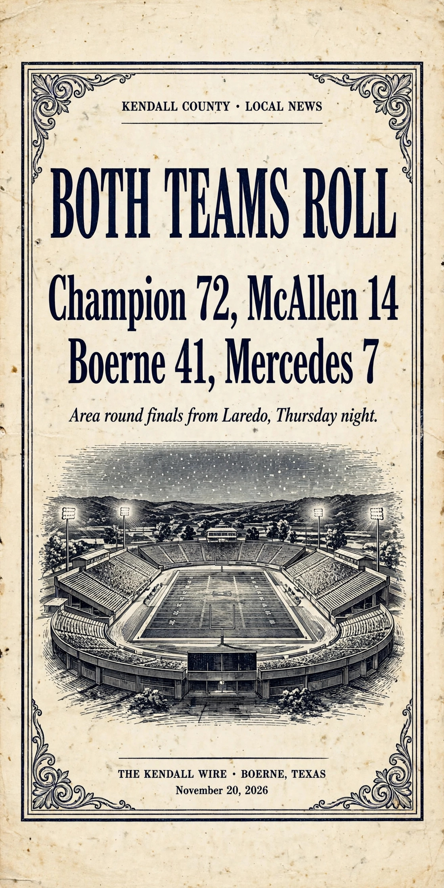

Both Boerne teams roll in Laredo: Champion 72-14, Greyhounds 41-7
Both Boerne ISD varsity football teams won their area round playoff games on Thursday night, November 19, in Laredo, and both advance to the regional semifinals on Thanksgiving weekend.
Champion Chargers 72, McAllen High 14
Boerne Champion beat McAllen High 72-14 on Thursday night at the Student Activity Center in Laredo in the Class 5A Division I area round, according to RGVSports.com.
McAllen recovered a fumble on the game's opening possession, and Champion answered with a 38-0 halftime lead behind quarterback Ryder Flugence, RGVSports.com reported. McAllen scored late in the second half on two Luke Laurel touchdown passes, 19 yards to Joaquin Alvarez and 5 yards to Brodyn Santos.
The win improved Champion to 11-1. McAllen finished its season 11-1. Champion advances to the regional semifinals against the winner of Friday night's area round game between Corpus Christi Veterans Memorial and Austin Anderson in San Antonio, according to RGVSports.com.
Boerne Greyhounds 41, Mercedes 7
Boerne High beat Mercedes 41-7 on Thursday night at Shirley Field in Laredo in the Class 5A Division II area round, according to RGVSports.com.
The Greyhounds led 28-0 at halftime. Mercedes scored its only touchdown in the third quarter, by junior Frankie Salinas, RGVSports.com reported.
The win improved Boerne to 12-0. Mercedes finished its season 8-4. Boerne advances to the regional semifinals on Thanksgiving weekend.
Sources
- RGVSports.com, RGV Football Roundup: Four Valley teams fall in area round (November 19, 2026): https://rgvsports.com/rgv-football-round-up-four-valley-teams-fall-in-area-round/
- RGVSports.com, RGV Football Playoff Schedule and Scores, Area Round: https://rgvsports.com/rgv-football-playoff-schedule/
- Texas Football Roundup, Boerne vs Mercedes area preview and final: https://texasfootballroundup.com/2026/11/14/boerne-vs-mercedes-2026-area-preview/
- Texas Football Roundup, McAllen vs Boerne Champion area preview and final: https://texasfootballroundup.com/2026/11/14/mcallen-vs-boerne-champion-2026-area-preview/
- Boerne Star, Boerne ISD football teams win second-round playoff games (November 19, 2026): https://www.boernestar.com/article/14629,boerne-isd-football-teams-win-second-round-playoff-games
Sources
- RGVSports.com, RGV Football Roundup: Four Valley teams fall in area round (November 19, 2026)
- RGVSports.com, RGV Football Playoff Schedule and Scores, Area Round
- Texas Football Roundup, Boerne vs Mercedes area preview and final
- Texas Football Roundup, McAllen vs Boerne Champion area preview and final
- Boerne Star, Boerne ISD football teams win second-round playoff games (November 19, 2026)